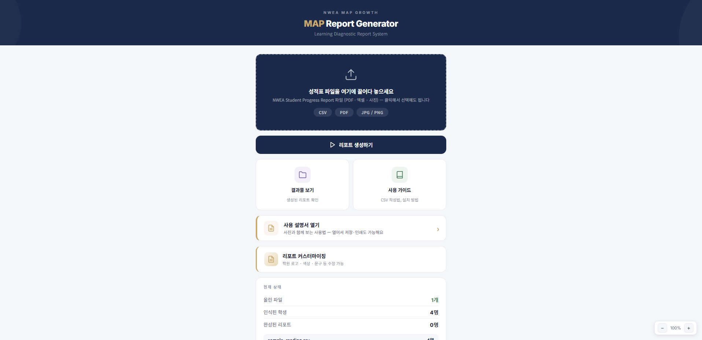
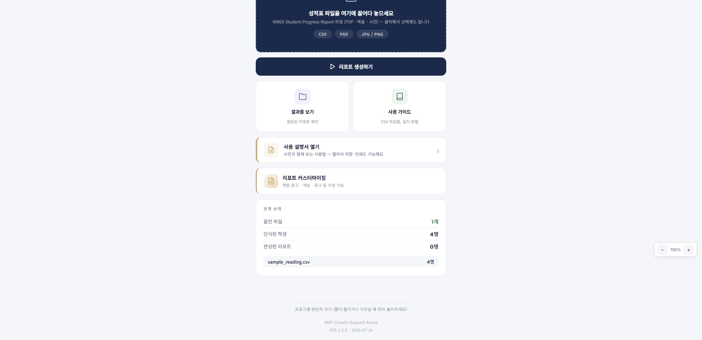
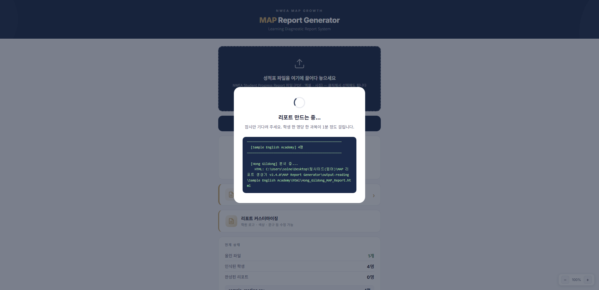
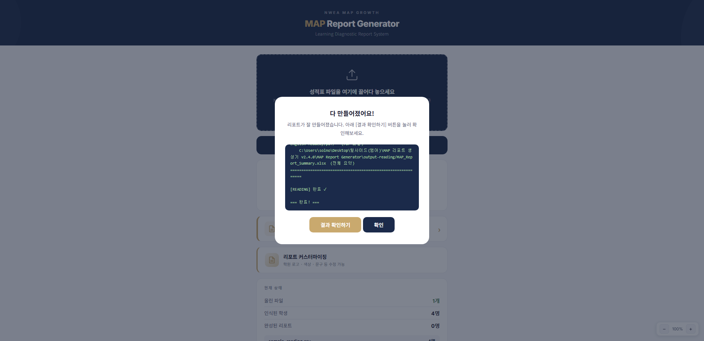
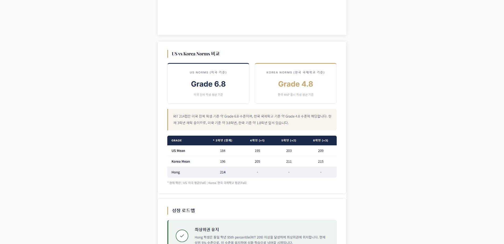

PC내 PC
📁MAP 자료
ZIP리포트 생성기v2.4.0.zip 1받은 zip 파일에 마우스 오른쪽 버튼
열기
연결 프로그램
압축 풀기...
2압축 풀기 를 누릅니다 · 폴더가 하나 생깁니다
보내기
복사 · 삭제 · 이름 바꾸기
속성
메일로 받은 zip 파일은 바탕화면에 두고 푸는 게 제일 편합니다
압축 풀기 창이 뜨면 그대로 압축 풀기 버튼 · 프로그램 설치는 따로 없습니다
압축 풀기 창이 뜨면 그대로 압축 풀기 버튼 · 프로그램 설치는 따로 없습니다
PC내 PC
📁MAP 자료
ZIP리포트 생성기
v2.4.0.zip
v2.4.0.zip
▮MAP Report
Generator
Generator
▮ MAP Report Generator — □ ✕
←→↑내 PC › 바탕 화면 › MAP Report Generator
★ 즐겨찾기
▮ 바탕 화면
↓ 다운로드
▤ 문서
💻 내 PC
이름유형크기
data파일 폴더
input파일 폴더
node파일 폴더
output-reading파일 폴더
▮ 리포트 생성하기.vbsVBScript 스크립트 파일4KB
1리포트 생성하기 를 두 번 누릅니다
바탕화면에 바로가기 만들기.batWindows 배치 파일1KB
방화벽 허용 (한 번만).batWindows 배치 파일2KB
시작하기.htmlChrome HTML 문서8KB
사용 설명서.htmlChrome HTML 문서680KB
진단하기.batWindows 배치 파일2KB
14개 항목
"Windows의 PC 보호" 안내가 뜨면 추가 정보 → 실행 · 처음 한 번만 그렇습니다
폴더 안 시작하기.html 을 열면 같은 내용이 글로도 있습니다
폴더 안 시작하기.html 을 열면 같은 내용이 글로도 있습니다
PC내 PC
📁MAP 자료
ZIP리포트 생성기
v2.4.0.zip
v2.4.0.zip
▮MAP Report
Generator
MMAP ReportGenerator
Generator 1처음 실행하면 바탕화면에 이 아이콘이 저절로 생깁니다 · 다음부터는 이걸 두 번
📄성적 파일
다음부터는 폴더에 들어갈 필요 없이 바탕화면 아이콘만 두 번 누르면 됩니다
아이콘이 안 생겼으면 폴더 안 바탕화면에 바로가기 만들기 를 한 번 눌러 주세요
아이콘이 안 생겼으면 폴더 안 바탕화면에 바로가기 만들기 를 한 번 눌러 주세요
PC내 PC
📁MAP 자료
MMAP Report
Generator
Generator
이 검은 창을 닫지 마세요 · 닫으면 프로그램이 멈춥니다
잠시 뒤 인터넷 창이 저절로 열립니다. 화면은 그 인터넷 창에서 씁니다
잠시 뒤 인터넷 창이 저절로 열립니다. 화면은 그 인터넷 창에서 씁니다

1 성적 파일을 끌어다 놓는 곳2 파일이 들어가면 리포트 생성하기3 만든 리포트 보기 · 사용 가이드4 지금 상태 · 올린 파일과 학생 수화면은 이 한 장이 전부입니다
위에서 아래로 순서대로 누르면 됩니다
위에서 아래로 순서대로 누르면 됩니다
1NWEA에서 받은 파일을 여기에 끌어다 놓습니다 · 눌러서 골라도 됩니다CSV · PDF · 사진 모두 됩니다
03편에서 Download .CSV 로 받은 파일이면 가장 정확합니다
Student Progress PDF나 성적표 사진도 읽어 들입니다
Student Progress PDF나 성적표 사진도 읽어 들입니다

1파일이 들어오면 올린 파일 · 인식된 학생 숫자가 바뀝니다인식된 학생 수를 꼭 확인하세요
보낸 명단 인원과 다르면 파일이 잘못 읽힌 것입니다
보낸 명단 인원과 다르면 파일이 잘못 읽힌 것입니다
맨 아래 프로그램 완전히 끄기 는 폴더를 옮기거나 지울 때만 누릅니다
1리포트 생성하기 를 누릅니다
학생 한 명당 한 과목에 1분 정도 걸립니다
20명이면 20분쯤 · 그동안 다른 일 하셔도 됩니다
20명이면 20분쯤 · 그동안 다른 일 하셔도 됩니다

만드는 중 · 학생 이름이 하나씩 올라옵니다창을 닫거나 새로고침하지 마세요
검은 창도 그대로 두세요. 끝나면 저절로 다음 창이 뜹니다
검은 창도 그대로 두세요. 끝나면 저절로 다음 창이 뜹니다

1결과 확인하기 를 누르면 저장된 폴더가 열립니다다 만들어졌어요 가 뜨면 끝
확인 을 누르면 첫 화면으로 돌아갑니다
확인 을 누르면 첫 화면으로 돌아갑니다
 학생 이름 · 학기 · RIT점수 · 상위 몇 % · Lexile · 학년 수준종합 요약 · 학부모께 그대로 읽어 드리는 문단
학생 이름 · 학기 · RIT점수 · 상위 몇 % · Lexile · 학년 수준종합 요약 · 학부모께 그대로 읽어 드리는 문단학생별로 PDF 한 장씩 만들어집니다
HTML도 같이 저장돼 화면으로 볼 수 있어요
HTML도 같이 저장돼 화면으로 볼 수 있어요

미국 기준 · 한국 국제학교 기준 학년 환산학년별 평균과 우리 아이 점수 비교표영역별 강점·약점, 추천 도서, 가정 학습법까지 이어집니다
MAP Report Generator › output-reading › 샘플영어학원
홈
바탕 화면
다운로드
문서
이름수정한 날짜유형
📁 html2026-09-07 오전 10:02파일 폴더
📁 pdf2026-09-07 오전 10:02파일 폴더
학부모께는 pdf 폴더 안의 파일을 한 명씩 보내면 됩니다
한 단계 위 폴더의 MAP_Report_Summary.xlsx 는 원장님이 반 전체를 한눈에 볼 때 씁니다
한 단계 위 폴더의 MAP_Report_Summary.xlsx 는 원장님이 반 전체를 한눈에 볼 때 씁니다